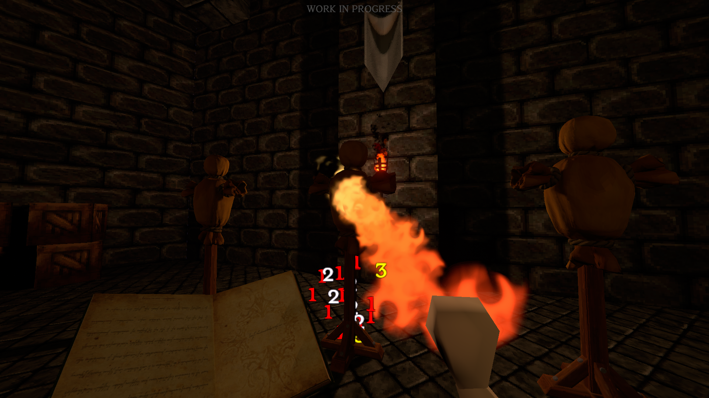
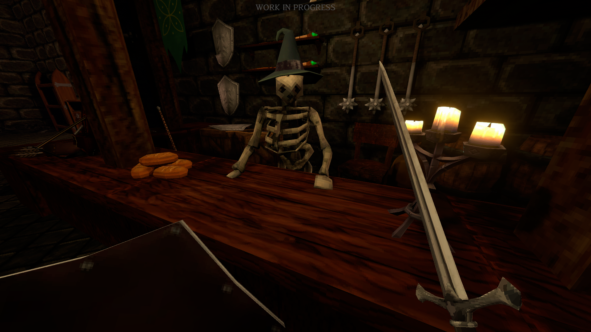
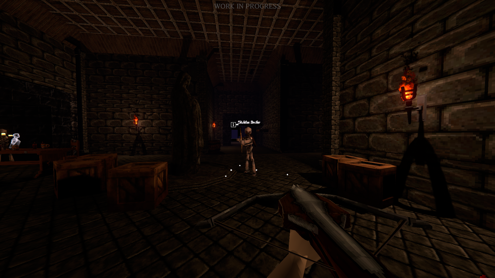
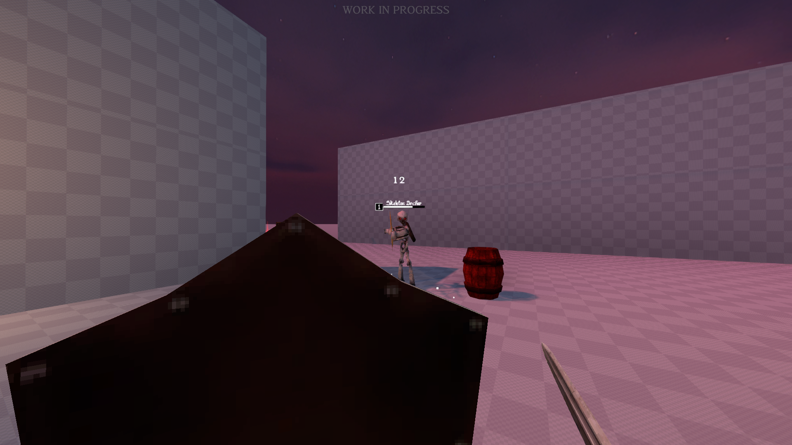
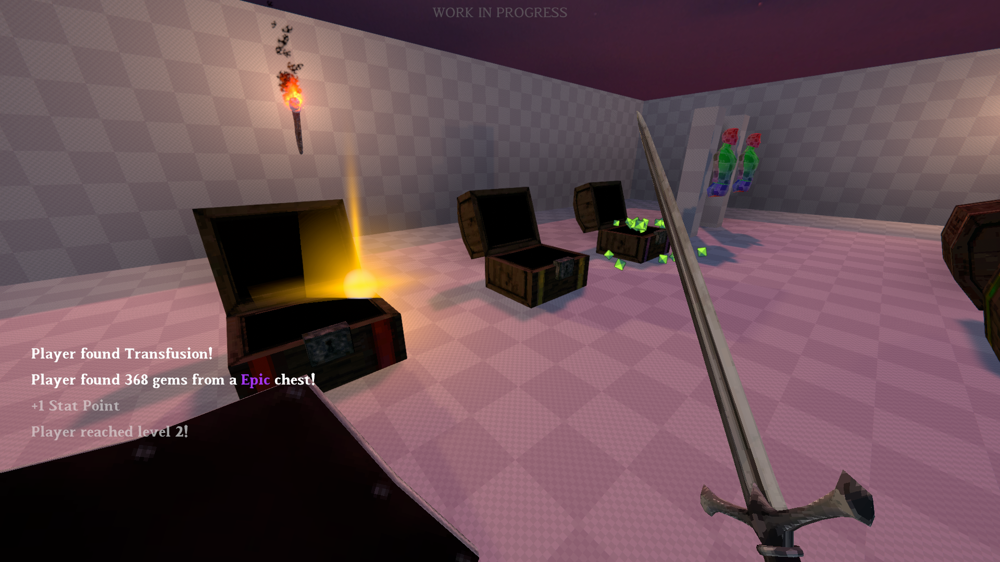
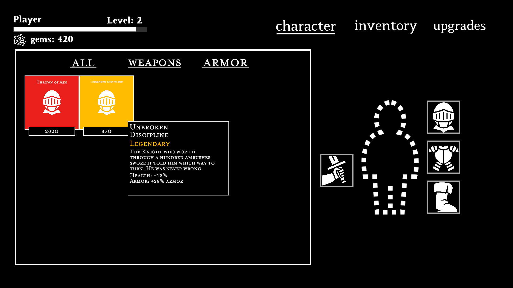

A world that should be dead.
Dungeon Game is a first-person dungeon crawler built around a dying world, strange creatures, fast movement, and a heavy atmosphere of decay. It is the current project in which several ideas I've explored in earlier prototypes are coming together, and an accumulation of what I've learned so far as a game developer.
This is also one of the first projects in which I delved into multiplayer networking using Unity Mirror and Steam Networking to create a peer-to-peer solution in-game.


An ever changing environment.
One of the game's central ideas is the procedurally generated dungeon. This design decision keeps the dungeon feeling fresh and dynamic, ensuring no two runs are alike, allowing enemies, keys, chests, secrets, and more to be discovered.

Movement, combat, and discovery.
The design is built around fast first-person movement, weapons, enemy encounters, environmental discovery, and the feeling that something is always waiting deeper in the dungeon.
This project is also an opportunity to experiment with how atmosphere and gameplay systems can reinforce each other instead of feeling like separate layers.


Building the idea.
Dungeon Game is being developed iteratively. Prototypes, visual experiments, enemy ideas, and procedural dungeon work are being tested as separate pieces before they are committed to the larger game.
This page is intentionally structured as a living case study. As development progresses, screenshots, videos, design notes, and technical breakdowns can be added here and changed as throughout development.
